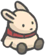
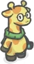
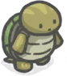
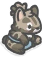
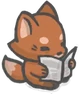
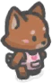

| Nombre | Características | Especie | Imagen |
|---|---|---|---|
| Tsuki | Tsuki es el personaje principal, su historia comienza cuando se retira de la vida de la ciudad y regresa a su ciudad natal, Mushroom Village, para heredar la granja de zanahorias que dejó su abuelo. | Conejo |  |
| Chi | Chi lleva gafas redondas y una bufanda verde claro. Le encanta leer y sentarse en el muelle con Tsuki. | Jirafa |  |
| Moca | Moca disfruta tomar siestas, comer papas fritas, beber té y cuidar su bonsái. | Tortuga |  |
| RoseMary | RoseMary es la propietaria de la "Tienda de Plantas de Rosemary", un vivero. Tsuki visita su tienda después de ayudar a Moca a arreglar su maceta de bonsái rota. | Cobayo | |
| Paige | Paige es muy tranquila y con los pies en la tierra. Tiene un lado más infantil que se muestra a través de su amor por la comida y su odio por estar encerrada durante demasiado tiempo. | Gineta |  |
| Yori | Yori es quien atiende la Tienda, es anciano, pero es amable. También le encanta pescar, ¡y tiene una linda hija llamada Pipi! | Zorro |  |
| Pipi | Pipi es la pequeña hija de Yori, trabaja junto a él y pasa su tiempo libre haciendo manualidades. | Zorro |  |